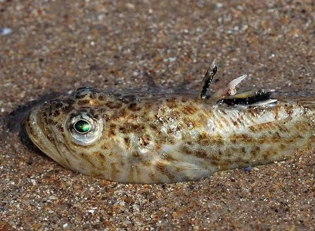
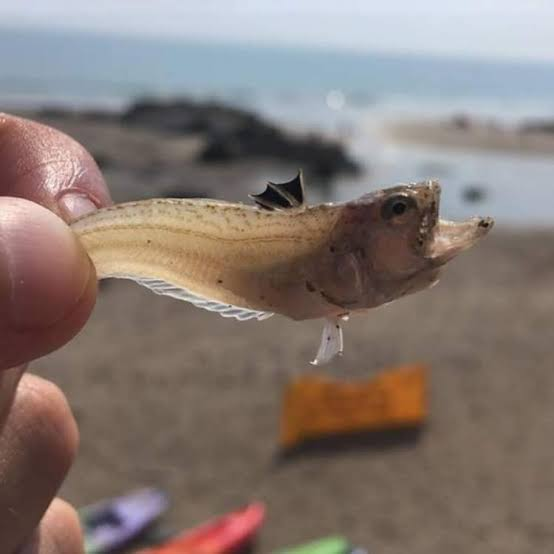

Leeft in ondiep water
Langs de stranden van Kos komt soms de pieterman (weever fish) voor. Dit kleine visje graaft zich in het zand in ondiep water. De kans is klein, maar een steek kan pijnlijk zijn door giftige stekels.
Klein visje in ondiep zand – steek is zeldzaam maar pijnlijk.

Langs de stranden van Kos komt soms de pieterman (weever fish) voor. Dit kleine visje graaft zich in het zand in ondiep water. De kans is klein, maar een steek kan pijnlijk zijn door giftige stekels.

Loop bij voorkeur met slippers of waterschoenen in zee en schuifel een beetje met je voeten, zodat de vis wegzwemt.
Small fish in shallow sand – stings are rare but painful.
Along the beaches of Kos the weever fish (pieterman) sometimes occurs. This small fish buries itself in the sand in shallow water. The chance is low, but a sting can be painful because of venomous spines.
Preferably walk in the sea with flip-flops or water shoes and shuffle your feet a little so the fish swims away.
Kleiner Fisch im flachen Sand – Stiche selten, aber schmerzhaft.
Entlang der Strände von Kos kommt manchmal das Petermännchen vor. Es gräbt sich im Sand ein. Ein Stich kann durch giftige Stacheln schmerzhaft sein.
Am besten mit Flip-Flops oder Wasserschuhen ins Meer und die Füße etwas schlurfen, damit der Fisch wegzuschwimmt.
Piccolo pesce nella sabbia bassa – punture rare ma dolorose.
Lungo le spiagge di Kos a volte c’è il pesce ragno. Si nasconde nella sabbia. Una puntura può essere dolorosa per le spine velenose.
Entra in mare con infradito o scarpe da acqua e strascica un po’ i piedi così il pesce nuota via.
Sığ kumsaldaki küçük balık – sokma nadir ama acılı.
Kos plajlarında bazen trakonya görülür. Kuma gömülür. Zehirli dikenleri acı verebilir.
Denize terlik veya deniz ayakkabısıyla girin ve ayaklarınızı sürüyerek yürüyün ki balık uzaklaşsın.
Pececito en arena poco profunda – picaduras raras pero dolorosas.
En las playas de Kos a veces aparece el pez araña. Se entierra en la arena. Una picadura puede doler por las espinas venenosas.
Entra al mar con chanclas o zapatos de agua y arrastra un poco los pies para que el pez se aleje.